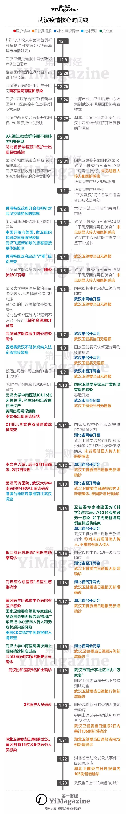
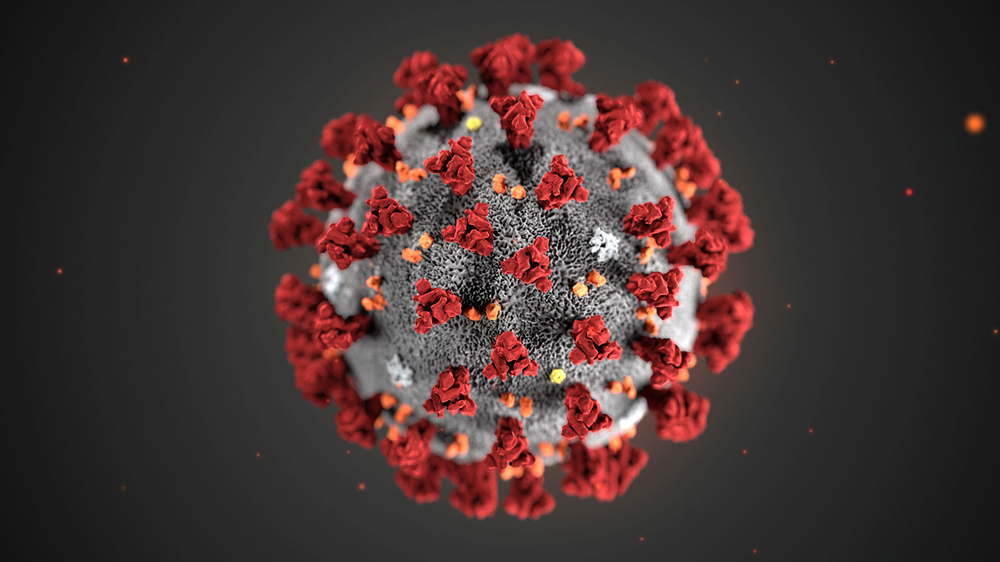
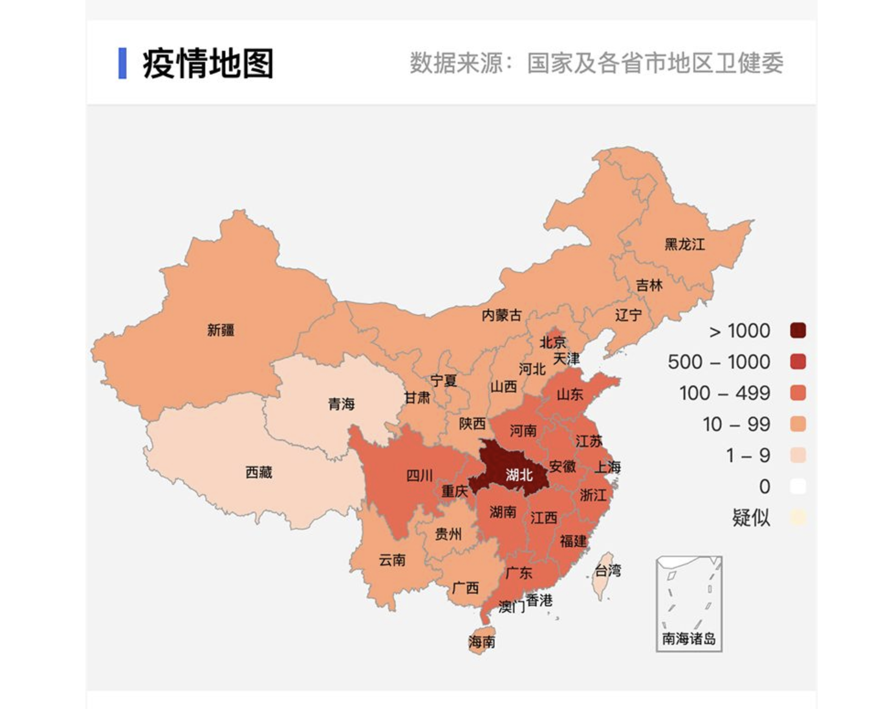
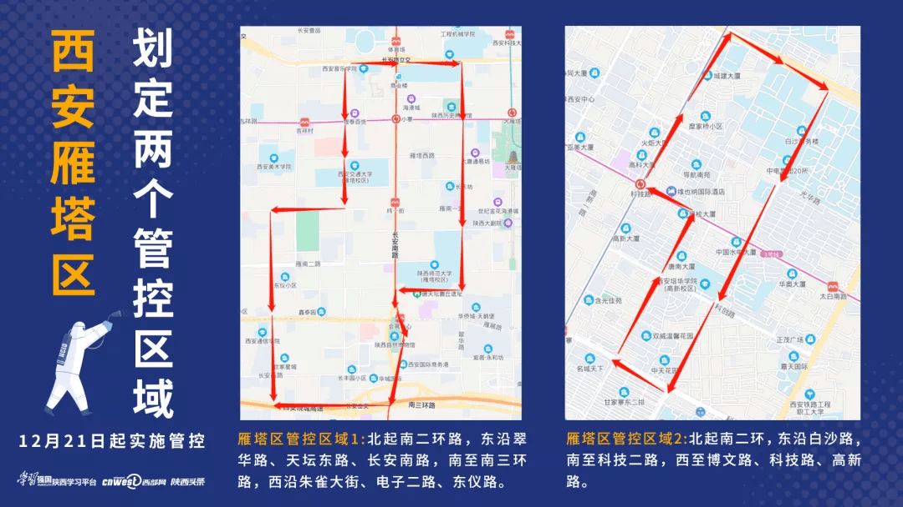
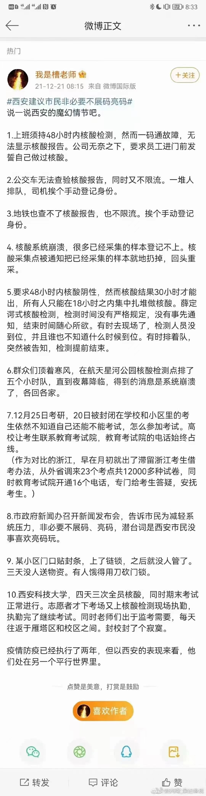
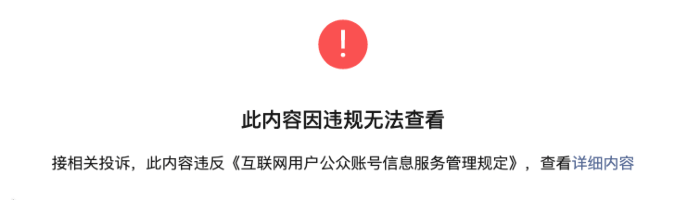

仅纪念这次席卷全球的新冠病毒疫情，愿逝者安息，生者如斯！
我翻开历史一查，这历史没有年代，歪歪斜斜的每页上都写着’仁义道德’四个字。我横竖睡不着，仔细看了半夜，才从字缝里看出字来，满本都写着两个字是 “吃人”。
1. 武汉疫情记录
按照时间记录新型冠状病毒的相关时间报道
2019 年 12 月 08 日，以为来自华南海鲜市场的病人，因为持续 7 天的发热、咳嗽和呼吸严重困难入院。5 天之后，他没有去过海鲜市场的妻子也因为不明原因的肺炎而入院。2020 年 1 月 1 日，华南海鲜市场关闭。2020 年 1 月 2 日，41 名新型冠状病毒肺炎患者确诊。发表在《柳叶刀》期刊上的一项研究论文表明，中国研究人员在论文中描述了第一批 41 个确诊病例，最早的病例是在 12 月 1 日报告的。此时喜迎春节的中国民众还不知道，一场感染上万人的瘟疫已经开始了。
- 2019 年 12 月 01 日 - 2020 年 01 月 23 日
- Wuhan seafood market may not be source of novel virus spreading globally
- Clinical features of patients infected with 2019 novel coronavirus in Wuhan, China
- 肺部感染医保住院的亲身经历
- 世界卫生组织正式将造成武汉肺炎疫情的新型冠状病毒命名为””2019 新型冠状病毒(2019-nCoV)””
- CCTV 8 名造谣者被查处
- 廣州花市開鑼 民眾不怕肺炎：信政府！年年有今日
- 武漢肺炎／廣州市民：「相信政府！拒戴口罩」 網友無言
- 武汉疾控专家：疫情目前可防可控| CCTV 财经
- 武汉病毒疫情新增 17 专家称”可防可控”
- 震惊世界！武汉华南海鲜市场罕见照片——疫情发源地！
- 2019 新型冠状病毒指南（中文首译版）新鲜出炉！
- 假如武汉的警铃有机会被拉响，可以是哪天？


在 20 日急速增加了 2 倍，危重患者已经有 44 人。后续疫情的大规模爆发，导致武汉、黄冈重灾区医院的病床、口罩、隔离服等都严重不足。而且发现有严重人传人情况，导致一位病人传染了 14 名医护人员的情况。紧接着，从 1 月 23 日的鄂州、仙桃、枝江、潜江到 1 月 26 日的襄阳，除了山林遍布的神农架，湖北省所有城市都宣布进入封城状态。之后武汉封城，湖北进入安全事件一级响应，随后各个省份紧接着进入一级响应。
2020 年 01 月 24 日 - 2020 年 02 月 23 日
- 关于全市高速公路、普通公路和铁路实行交通管制的通告
- 武汉将再建一个小汤山医院——武汉雷神山医院
- U.S. Working to Evacuate American Citizens From Epidemic-Stricken Chinese City
- 30 省市自治区启动重大突发公共卫生事件一级响应
- 湖北省新型冠状病毒感染的肺炎防控指挥部通告
- 国务院通知：春节假期延长至 2 月 2 日
- 好消息！西安版””小汤山””将开工建设，首期 2 月中旬可投用
- 重大发现！深圳确诊患者粪便中检测出病毒 RNA 阳性
- 西安延迟企业复工上班时间：不早于 2 月 9 日 24 时前
- 封面报道之一|现场篇：武汉围城
- 封面报道之二 | 病人篇：疑似者之殇
- 封面报道之三 | 解毒篇：溯源新冠病毒
- 封面报道之四 | 国际篇：全球共济
- 军队抽组医疗力量承担武汉火神山医院医疗救治任务
- 非典往事：一社区疫情大爆发，病毒通过粪便传播可能是关键因素
- “”火神””战瘟神——火神山医院 10 天落成记
- 湖北十堰市委书记暗访疫情防控被拦
- 湖北十堰市委書記暗訪疫情防控被攔
- 十堰市委书记摆拍那个事，十堰网友说他工作其实做…
- 云南回应大理征用口罩：通报批评、立即返还
- 武汉志愿者给需要药物的病人送药
- 「新型冠状病毒」消失的零号病人
- 世卫和中国对新冠病毒联合考察报告

从 2 月 24 日开始全国大部分地区都开始解封了，基本大部分景点都陆续还是开放了，所有的快递也都开始发货了。在政府的号召下，很多企业也都开始复工了。这是一个好兆头，证明疫情相比之前确实得到了控制，但是大规模的开始复工，真的不会引发大规模传染吗？现在新型冠状病毒已经开始蔓延到世界的其他各国之中，最为严重的是韩国、意大利、日本。中国疫情逐渐过去，其他许多国家却陷入苦战。面对这场疫情，没什么赢家不赢家，只有伙伴，彼此同心同理，患难与共的伙伴。
- 2020 年 02 月 24 日 - 2020 年 04 月 01 日
- 武汉保卫战
- 新冠病毒的自我修养：如何统治全人类
- 商务部：有序有力组织商贸企业复工复产
- 持续更新 │ 全国多地调降新冠肺炎疫情应急响应级别
- 陕西全面恢复交通，解除封闭，恢复市场经营！
- 中国天天感恩节
- 过于漫长的冬天
- 武汉宣布：放开离汉通道””第 17 号通告””无效
- 做好党员自愿捐款指导服务 支持新冠肺炎疫情防控
- 世界，我们需要帮助：中国医务人员柳叶刀发文，请求国际医疗支援
- 尴尬：200 多项新冠临床试验，终将””一地鸡毛”” ？
- 统计数字之外的人：他们死于””普通肺炎””？
- 张文宏新冠肺炎复盘（1）：我们从至暗时刻中走来
- 张文宏新冠肺炎复盘（2）：以为是黑天鹅，其实是灰犀牛
- 张文宏新冠肺炎复盘（3）：全球流行背景下的国际间新冠防控策略比较及后续应对措施思考
- 张文宏新冠肺炎复盘（4）：穿越寒冬，向光明而生的中国传染病防控体系
- 新冠肺炎全球风险级别升至”非常高”
- 韩国新增 594 例新冠确诊病例 累计 2931 例
- 疫情下的韩日双城记：大邱紧张，大阪淡定
- 美国华盛顿州宣布进入紧急状态
- 没回过湖北的湖北人，隔离他们凭啥？
- 领导拿补助远超抗疫一线医生？安康市中心医院致歉：将重新核定
- 微纪录片 | 武汉 H87 路女公交司机
- 火神山援建者回乡被收隔离费，当地回应：已退款、副镇长被免职
- 瑞士宣布：轻症患者不再检测，回家隔离别去医院
- 为应对新冠疫情意大利 将封城范围扩大至全国
- 世卫组织宣布新冠肺炎为全球性流行病
- 湖北政府网站刊文：感染新冠适龄男性应进行生育力检查
- 西班牙首相夫人新冠检测呈阳性
- 加拿大总理夫人新冠病毒检测结果呈阳性
- 英国科学界超过 500 名研究人员发三封实名公开信反对英国首相的抗疫策略
- 方舱医院关闭：这是我们最希望看到的关门大吉
- 纽交所将从下周一起暂时改为全电子交易
- 尤瓦尔·赫拉利《冠状病毒之后的世界》
- 李克强：各地要实事求是公开透明发布疫情信息 不得瞒报漏报
- 武汉战”疫”全景纪录片《英雄之城》
- 重磅！英国首相约翰逊新冠病毒检测结果呈阳性
- 比尔·盖茨喊话全美学习中国: 美国的反应太迟钝了!
- 外交部：28 日起暂停持有效中国签证居留许可的外国人入境
随着疫情的进一步发展，已经蔓延到全世界了。现在已经最严重的国家，已经从中国 🇨🇳 转移到底了美国 🇺🇸、意大利 🇮🇹、西班牙 🇪🇸、英国 🇬🇧 等欧洲国家，尤其是美国干扰的患者已经突破 21 万人了，而意大利的情况也非常糟糕。之前在中国疫情大规模爆发的时候，其他国家指责这样处理有问题，那样处理无合理。然而到疫情蔓延到自己国家的时候，自己又是怎么处理的呢？英国首相提出了群体免疫并自己身先士卒，美国神婆消灭病毒且要求全国尽快复工。而反观中国，现在疫情基本已经全面控制住了，但是至今都没有一句道歉，很难吗？
- 2020 年 04 月 01 日 - 2020 年 06 月 09 日
全国经过了两个多月的宁静期，北京开始了第二轮新冠病毒的传播。从 6 月 10 号的第一例确诊病例，到之后几天的 68 人，北京上万人进行了病毒的筛查，为北京打上了危险区域的标签 🏷。现在很多从北京回来或去往北京的人，都需要被特殊照顾或者直接劝返。之后的日子里，可能新冠病毒会成为常规病进入我们的日常生活中去，所以我们还是需要多多注意生活习惯和防范意识。病毒还没有结束，防疫工作还要继续进行！
- 2020 年 06 月 10 日 - 2021 年 02 月 12 日
2. 天下何以为公
按照时间记录武汉肺炎期间出现的负面信息
政府机构
- 中央来核查，黄冈卫健委唐主任这回答，看得人更急！
- 湖北黄冈处理处分党员干部 337 人：6 名领导干部予以免职
- 关于防疫专班工作人员领取防护口罩的情况通报
- 长平观察：为什么没有查办武汉官员？
- 湖北省卫健委两名主要官员被免职
- 重磅！上海市长应勇调任湖北省委书记
- 武汉已问责处理 620 人, 涉局级干部 6 人、处级 127 人
- 山东省任城监狱疫情事件已查清
- 武汉早期疫情上报为何一度中断
- 黑龙江 18 人因疫情防控不力被追责问责
- 好心肝诊所私打疫苗，指挥中心交司法彻查揪特权
- 郑州 9 名公职人员因疫情防控不力被严肃追责问责
- 江苏 8 月问责处理履行疫情防控管理监督职责不到位干部 14 人
- 哈尔滨市疫情防控工作中履职不力党员干部追责问责
N95 口罩
红十字会
武汉病毒所
公民记者
吹哨人
人间惨剧
- 家人被隔离湖北 17 岁脑瘫儿在家 6 天死亡，当地成立调查组
- 牺牲在抗疫一线的人民警察
- 刚刚，武昌医院院长刘智明证实因染新冠去世
- 湖北电影制片厂员工及三至亲去世 曾留泪目遗书
- 武汉市民宗委原主任王献良因感染新型冠状病毒去世
- 逝者｜新冠疫情中陨落的三位武汉教授
- 哀悼！武汉女医生夏思思殉职，年仅 29 岁
- 海南一名感染新冠肺炎医生病逝
- 孝感抗疫医生黄文军殉职
- 湖北一医生 1 个月接诊 3000 多名病人，在家中猝死未能认定工伤
- 武汉中心医院江学庆医生感染新冠肺炎去世，曾获中国医师奖
- 我在武汉街头流浪了 20 多天，头发白了一半
- 泉州一酒店倒塌！陸媒證實為新冠肺炎隔離點 70 人被埋已救出 35 人
- 一家三口全部复阳！70 岁老人病情加重！专家：注意这种情况
- 今早，汉口殡仪馆领骨灰的人们
- 出小区被劝阻后刺杀防疫志愿者，哈尔滨男子一审被判死刑
- 安徽六安多名孕妇被接种新冠疫苗：已安排核查整改
- 官方回应护士怀孕 9 月还在一线抗疫：从未号召孕妇当志愿者
爱国人士
洋垃圾
3. 其他人的声音
主要记录其他人对应武汉肺炎的观点
这是一个最好的时代，这是一个最坏的时代；这是一个智慧的年代，这是一个愚蠢的年代；这是一个信仰的时期，这是一个怀疑的时期；这是一个光明的季节，这是一个黑暗的季节；这是希望之春，这是失望之冬；我们面前应有尽有，我们面前一无所有；我们正踏上天堂之路，我们正走向地狱之门。
- Tinyfool
- Fenng
- Hao Chen
- 王局志安
- Thomas Yao
- 月光博客
4. 西安新冠疫情
忽如一夜春风来，疫情慢慢在袭来！
根据官方的报告，西安这次疫情，是因为巴基斯坦航空公司伊斯兰堡航班 PK854 抵达西安(12 月 4 日)，集中隔离在西安国际会展中心瑾程酒店。至 12 月 17 日，已检出 6 人确诊，对其中 4 人感染的病毒进行全基因测序，全部为 Delta-印度变异株。12 月 8 日，瑾程酒店一名专班工作人员向某的 7 日核酸采样检出阳性，随后，与向某同房间居住的另一名工作人员张某单人单间隔离，到 13 日采样检测为阳性，诊断为确诊病例。由于隔离酒店工作人员完全封闭管理，这组本土传播链只感染了两人。
而另一组本地大疫情，则是在距离隔离酒店 18 公里外的雁塔、曲江市区先后显现的。12 月 11 日晚，曲江新区在对医疗机构从业人员进行每周核酸检测中，发现 1 例阳性，为子牛门诊部药房工作人员郭某。子牛门诊部正好就在上一轮 9 月西北疫情的显现点唐隆国际酒店边上，但显然已经没有疫情关联。12 月 14 日下午，去省人民医院就诊的刘某核酸阳性，随后送她就诊的女婿杨某也阳性确诊。
直到 18 日下午，陕西方面的新闻发布会才通报证实：已对 12 月 9~16 日报告的 12 名本土病例完成了全基因测序，所有 12 个人的测序结果，均与 PK854 航班上的境外输入病例高度同源。12 月 4 日前，国内尚无报告与此相同序列。据此初步判定，此次疫情为境外输入引起的本土疫情，但是各传播链间缺少明确关联性。
- 2021 年 10 月 17 日 - 2021 年 12 月 15 日
起初的时候，确实没有感觉有多么严重，即使这段时间一直有病例再新增(但都不多)。同事，周四的时候还给我说，最近家里多炖点米面油和应季蔬菜，周末可能要封城，西安疫情严重的很。我当时想了想，这还没怎么，不至于吧！但是，还是默默地购置了一些东西。结果，过了一个周末，西安真的要封城了。

在通报中，西安市要求全体市民非必要不离市，非生活必须场所暂停营业，小区和村组进行封控管理，一切仿佛回到了去年疫情时足不出户的时刻。截止 12 月 21 日 24 时，本轮疫情已有 143 人确诊。并且，因为管控不严，病毒已外溢到北京、东莞、延安与咸阳等地。而在西安开始核酸检测后，每日新增病例也在不断翻倍，从三天前的 21 例猛增到昨日的 52 例。并且，一年一度的研究生考试来了。今年陕西省共有 17 万人考研，其中在西安考试的考试就有 13.5 万人。在网上，越来越多人开始唾骂西安防疫拉垮，是在逼迫学生放弃考研。
封城困住疫情逐个消灭成了最为迫切的事情，越来越多人开始唾骂西安防疫拉垮。与此同时，最基本的连衡量市民健康情况的西安一码通，都能崩了。一码通崩溃后，步行的上班族进不了公司，门卫只能无奈让员工现场发誓自己是阴性。说是好笑，但其实本质上根本不好笑，是耻辱。而公交车和地铁工作人员查不到核酸报告，只能让市民排长龙挨个登记身份，结果是导致更多的人群聚集。这既浪费了人力物力，又导致无法第一时间筛查出感染者。

- 2021 年 10 月 18 日 - 2022 年 01 月 24 日
- 陕西新增 7 例本土确诊病例 新增 2 例本土无症状感染者
- 西安启动全员核酸 通报 18 日新增本土病例详情
- 国家卫健委:昨日新增本土确诊病例 37 例,其中陕西 24 例
- 西安全市中小学幼儿园停课
- 西安公布昨日新增 34 例确诊病例详情
- 西安新增 52 例本土确诊
- 西安疫情外溢 4 地！小寨地铁站关闭！此轮疫情形成一定规模社区传播
- 西安：全市小区（村）、单位实行封闭式管理
- 西安官方：民众勿需恐慌 不必扎堆抢购
- 确诊两百余例为何“全城管控”？国务院专家详解
- 西安市处理疫情防控不力相关责任人 26 名
- 陕西新增 52 例本土确诊病例详情公布，最小确诊仅 2 岁
- 西安 25 日启动新一轮全员核酸检测
- 西安新增本土确诊 155 例，本轮累计确诊 485 例
- 西安本轮疫情累计确诊 485 例，全市开展全面消杀！
- 国家卫健委：昨日新增本土确诊病例 162 例 其中陕西 152 例
- 西安疫情略有缓解 雁塔区委正副书记被免职
其实，因为最难得是，一线工作的医护和工作人员。那个不是家里有老有小，但是却没有办法，只能继续工作。穿着厚重的防护服，每人 4 小时换一岗，轮流吃饭，像个马达一样不停转动。为了防疫，从政府到市民，整个西安全部被调动起来。但是，同时有暴露出了很多问题，比如说看病难(很多人在这段时间失去了亲人)、买菜难(免费的午餐战胜不了疫情)、做核酸难(一天一做确实太捞人了)，等等问题。这里并不是想指责某个人、某个城市，而且希望是否可以以此为戒？后续再次出现相同的问题，能够有合理、可实施的对应政策和规定呢？希望西安这波疫情早点过去，愿春暖花开，天下太平。
买菜难，不是因为没有菜，最根本的原因是一刀切了配送员。而让没有专业物流经验的基层公务员去负责派送、打包工作，免费的物资打不赢持久战(一碗水端平)。还有就是，老百姓遇到问题之后没有行之有效的方式去解决，最终的结果大都不好，要不是和物业门卫起冲突就是和防疫人员干起来了。是否可以建立一个客服体系，别让老百姓求助无门，永远在忙线，永远无人接听。下来就是看病难的问题，感染新冠是病，其他病也是病。孕妇、产妇、重症患者、一些特殊病人，可能真的等不了啊。很多小病，拖着拖着，拖久了，就成了大病。别为了「社会清零」，强行搞「封闭小区全员转到什么都没有的隔离小区」这一套了，除了折腾特殊群体的人身，还伤人心。还有就是，政府各个平台的封杀消息，真的绝了(不知道是不是祖传的)，不让其他人看到，难道以为这个事情就真的不存在了吗？

西安自从 12 月 23 日开始封城，经过了快一个月的时候，今天开始没有本地新增了。与此同时，天津和河南却又开始了新的一轮疫情的爆发，本土新增病例越来越多。从肉夹馍加油，到了胡辣汤加油。
- 唐驳虎：西安出现最匪夷所思的病毒传播
- 敬天使，敬每一个家庭，敬我们的西安，西安加油！
- 此刻骂西安，真没啥用！
- 三十六楼 刘亦风 西安西安
- 默存格物｜江雪：长安十日
- 传媒老友记｜西安，梦该醒醒了
- 是疫情杀人，还是防疫杀人？
- 31 省区市新增本土确诊 127 例：河南 102 例、天津 18 例
- 2022 年 1 月 19 日天津市新型冠状病毒肺炎疫情情况
西安市新冠疫情防控指挥部办公室 1 月 24 日发布消息：根据当前疫情防控形势，自 2022 年 1 月 24 日起，西安市降为低风险地区。这也意味着，西安本轮新冠疫情已经结束。西安疫情持续了整整一个月，终于可以下楼走走了。中间出现了很多事情，比如集体隔离、供给问题、转移清零等等，也挺无奈的。总结结束了，也算是件好事，没几天就要过年了，希望过年大吉，不要有新增了。
5. 疫情持续不断
间歇性记录身边发生的新冠疫情时间，结果证明其确实是一场长久的拉锯战！
最早在印度被发现的德尔塔新冠变异毒株，被指传染性更高且更容易导致重症，如今已在至少 74 个国家被发现人们担心，这种病毒恐怕成为全球主要毒株。究其原因是，印度总理过早地宣布战胜疫情，随后政党举行政治集会，人们参加大规模体育和宗教活动。此外，印度的人口十分年轻，因此早前就可能存在大量无症状感染者，而检测工作不够全面；最后，新的病毒变体出现使感染加速蔓延。随后，泰国、美国、英国等地均发生新冠疫情反复的迹象，但是相对而言人们的接受程度也变得平静了很多。
- 2021 年 02 月 13 日 - 2021 年 10 月 17 日
随着西安封城的结束，生活又回到了正规，终于不用为了吃饭、看病、锻炼而担忧了。但是还没有安稳多久，新一波变异病毒又来了，这次势头不仅大而且非常迅猛，很多一线大城市都已经中招，并且也都已经采用了之前在西安上演的防疫布局。香港每日新增确诊病例超 26908 人，吉林省单日新增 1412 人；吉林市、长春市封城了，深圳市也封城了。哎，不由得让人感觉不是个滋味，什么时候是个终点呢？
需要注意的是，这次亚洲大量感染的是 奥密克戎 BA.2 亚型变异株，已经不是上次西安疫情的 德尔塔 了。奥密克戎是新冠病毒的一种变异株，奥密克戎变异株还存在多种亚型，最普遍的是 BA.1、BA.2 和 BA.3。奥密克戎 BA.2 亚型也被称为“隐形变异毒株”，因为其传染力明显要比 BA.1 高出许多。
2022 年 03 月 01 日 - 至今
6. 新冠治疗方案
新型冠状病毒肺炎诊疗方案
- 国家卫健委发布《新型冠状病毒肺炎诊疗方案（试行第九版）》
为进一步做好新冠肺炎医疗救治工作，切实提高规范化、同质化诊疗水平，国家卫生健康委和国家中医药管理局组织专家对《新型冠状病毒肺炎诊疗方案（试行第八版修订版）》进行了修订，形成了《新型冠状病毒肺炎诊疗方案（试行第九版）》，并印发各地参照执行。新版诊疗方案是在认真研究德尔塔、奥密克戎等变异毒株传播特点和病例特征，深入分析相关研究成果的基础上形成的。重点修订内容如下：
一是优化病例发现和报告程序。在核酸检测基础上，增加抗原检测作为补充，进一步提高病例早发现能力。同时提高疑似病例诊断或排除效率，要求疑似病例或抗原检测结果为阳性者，立即进行核酸检测或闭环转运至有条件的上级医疗机构进行核酸检测。核酸检测结果为阳性者，进行集中隔离管理或送至定点医院治疗，并按照规定进行网络直报。
二是对病例实施分类收治。根据各地反映的“奥密克戎变异毒株患者以无症状感染者和轻型病例为主，大多不需要过多治疗，全部收治到定点医院会占用大量医疗资源”等意见，进一步完善了病例分类收治措施：
1.轻型病例实行集中隔离管理，相关集中隔离场所不能同时隔离入境人员、密切接触者等人群。隔离管理期间应做好对症治疗和病情监测，如病情加重，应转至定点医院治疗。
2.普通型、重型、危重型病例和有重型高危因素的病例应在定点医院集中治疗，其中重型、危重型病例应当尽早收入 ICU 治疗，有高危因素且有重症倾向的患者也宜收入 ICU 治疗。
三是进一步规范抗病毒治疗。将国家药监局批准的两种特异性抗新冠病毒药物写入诊疗方案，即：PF-07321332/利托那韦片（Paxlovid）和国产单克隆抗体（安巴韦单抗/罗米司韦单抗注射液）。
四是对中医治疗内容进行了修订完善。结合各地临床救治经验，加强中医非药物疗法应用，增加了针灸治疗内容；结合儿童患者特点，增加儿童中医治疗相关内容。
五是调整解除隔离管理、出院标准以及解除隔离管理、出院后注意事项。国内有关研究显示，处于恢复期的感染者在核酸 Ct 值 ≥35 时，样本中未能分离出病毒，密切接触者未发现被感染的情况。据此，新版诊疗方案将解除隔离管理及出院标准中的“连续两次呼吸道标本核酸检测阴性（采样时间至少间隔 24 小时）”修改为“连续两次新型冠状病毒核酸检测 N 基因和 ORF 基因 Ct 值均 ≥35（荧光定量 PCR 方法，界限值为 40，采样时间至少间隔 24 小时），或连续两次新型冠状病毒核酸检测阴性（荧光定量 PCR 方法，界限值低于 35，采样时间至少间隔 24 小时）”。将 “出院后继续进行 14 天隔离管理和健康状况监测” 修改为 “解除隔离管理或出院后继续进行 7 天居家健康监测”。
7. 这世界会好吗
林语堂：””中国就有这么一群奇怪的人, 本身是最底阶层, 利益每天都在被损害，却具有统治阶级的意识，在动物世界里找这么弱智的东西都几乎不可能。”
妈妈，他们抛弃了我，像歌唱一样，就抛弃了我
妈妈，我是多么爱你，当你沉默的时候，我爱你
只是那些猛烈的情绪，在睡不着的时候折磨着我
我那早已死去的父亲，在没有星星的夜晚看着你
妈妈，我会在夏天开放吗，像你曾经的容颜那样
妈妈，这种失落会持久吗，这个世界会好吗
忘记一些隐秘的委屈，在回头观望的时候迷失了自己
我的正在老去的身体，从某一天开始就在渐渐死去
妈妈，我爱你
妈妈，我居然爱上了她，像歌唱一样就爱上了她
妈妈，当你又回首一切，这个世界会好吗
妈妈，我是多么恨你
当我歌唱的时候，我恨你